AGRO+ BRASIL · DESIGN V2 · 05 NOV 2026
Meu campo, meu dia.
Comparação visual e evidências do aplicativo Flutter renderizado no emulador Android real. Ilustrações autorais, clima reprojetado e identidade consistente entre os módulos.
Android 17 · API 37390×844 dp320 dp e fonte 200%64 testes Flutter
Dados da galeria são explicitamente fictícios e não permitem gravações. O valor de 25 °C serve somente à avaliação visual. A versão conectada usa exclusivamente o backend.
ANTES · captura do emuladorMarca meteorológica e cartões uniformes.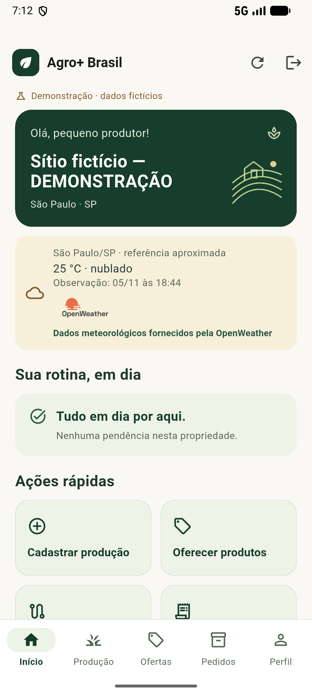
V2 · captura do emuladorPaisagem original, leitura do clima e ações.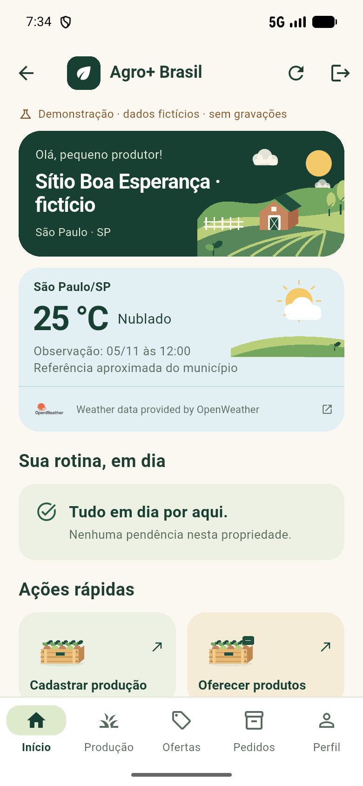
As proporções originais são preservadas. A captura anterior foi feita antes de alterar a configuração do emulador (1080×2400 px); a V2 usa 780×1688 px a 320 dpi. Abra qualquer imagem para inspecionar na resolução original.
Resultado, validação e limitações · Auditoria das cinco referências · Design system
Telas e interações no Android
Clima + próxima açãoCTA inteiro antes da rolagem, 390×844 dp.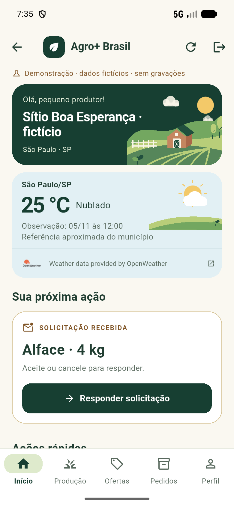
Primeiro acessoUma ação para começar a registrar a colheita.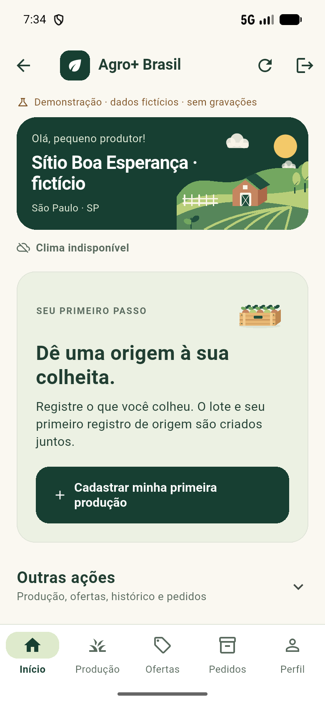
ProduçãoCultura e quantidade com acesso ao histórico.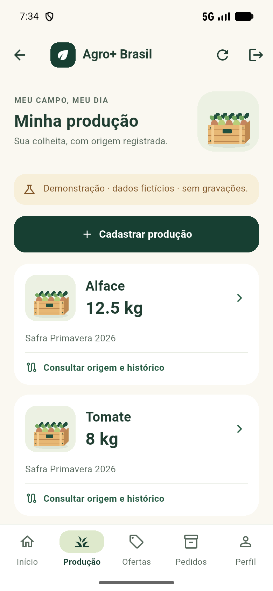
OfertasDisponibilidade e estados em português.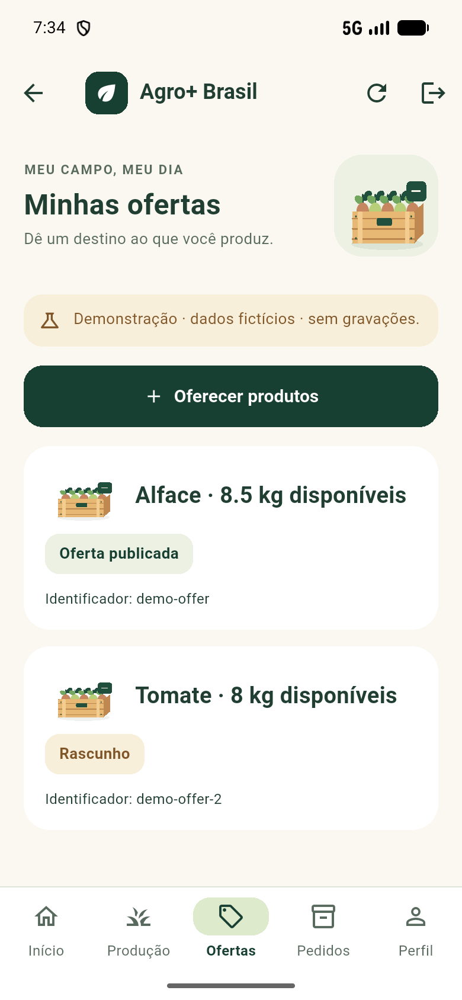
PedidosEstado e ações conforme permissão.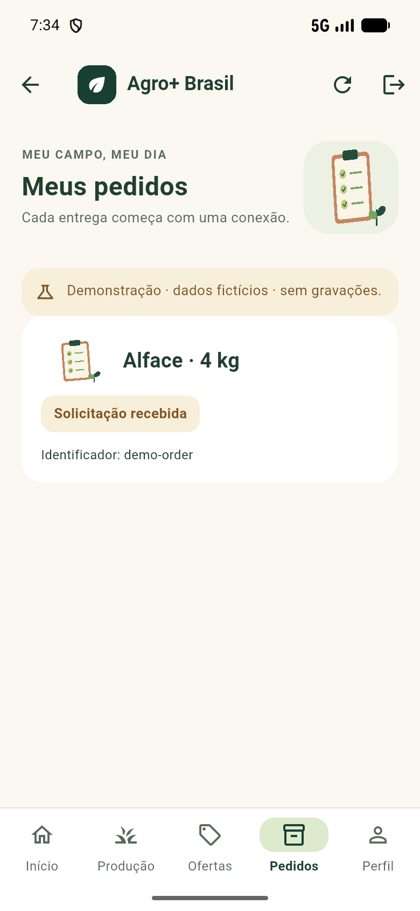
RastreabilidadeEventos confirmados em uma linha do tempo.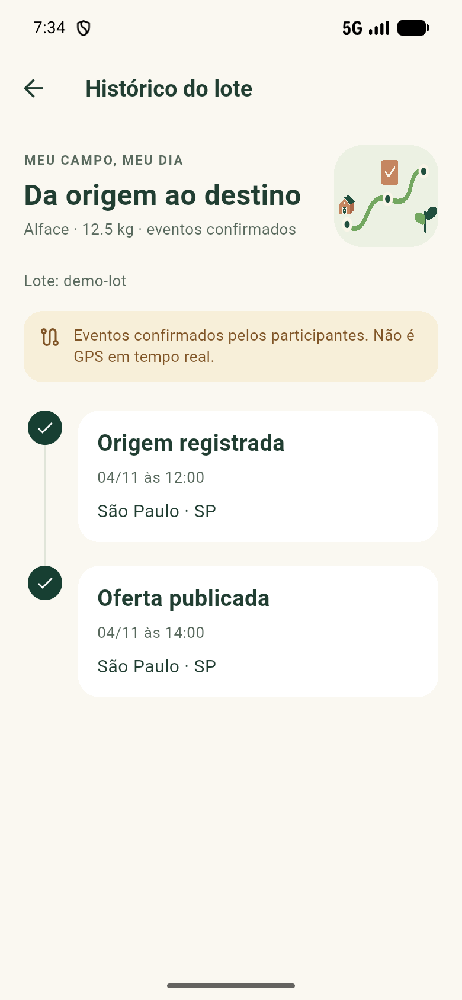
PerfilOrganização, papel e propriedade.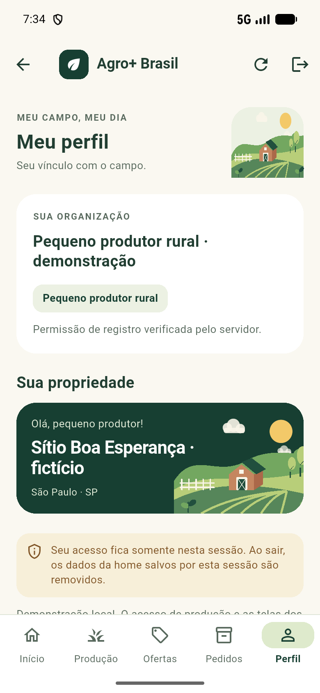
Cadastro · etapa 1Colheita, quantidade, safra e data.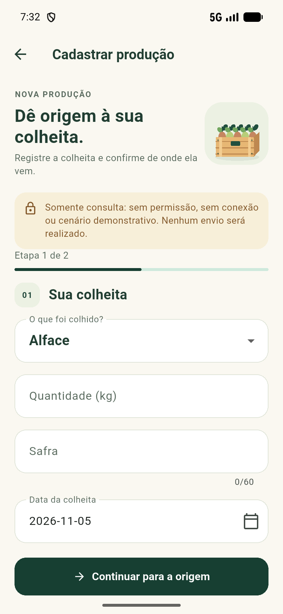
Cadastro · etapa 2Origem e confirmação; dados anteriores preservados.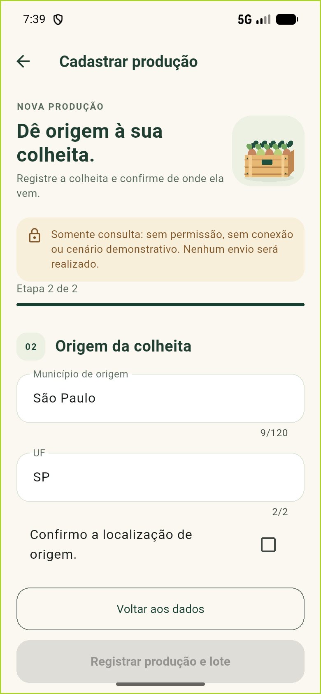
Retorno do cadastroLista recarregada sem erro de runtime.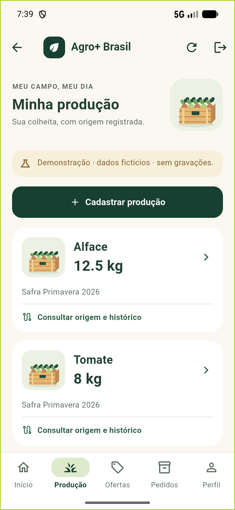
RetiradaPróximo passo do produtor.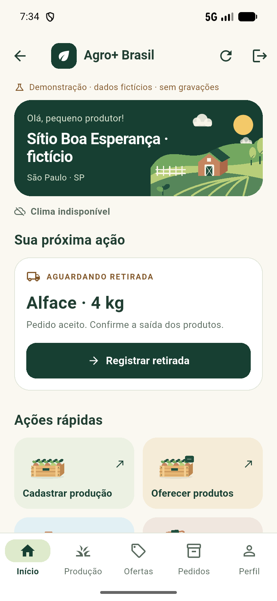
RecebimentoConfirmação pertence ao destinatário.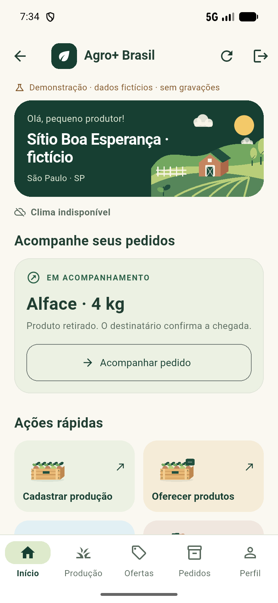
Tudo em diaEstado leve, sem criar urgência.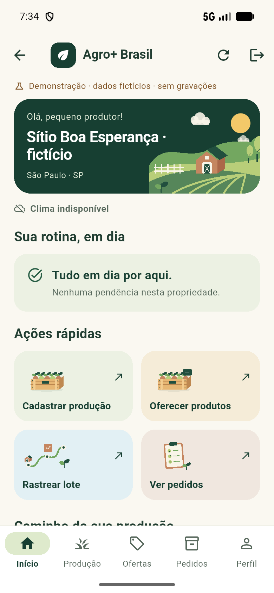
OfflineConsulta salva identificada e mutações bloqueadas.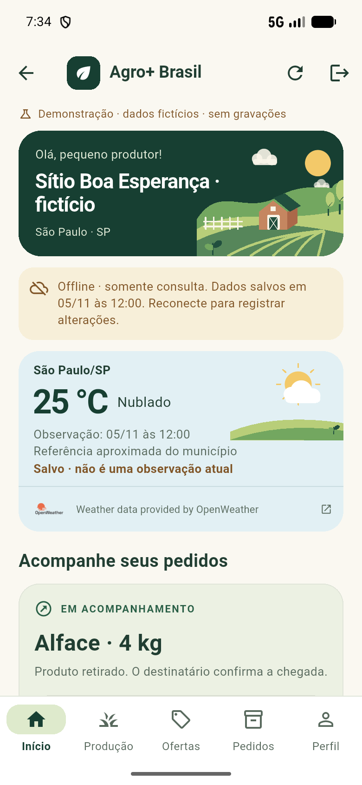
FalhaMensagem útil e nova tentativa.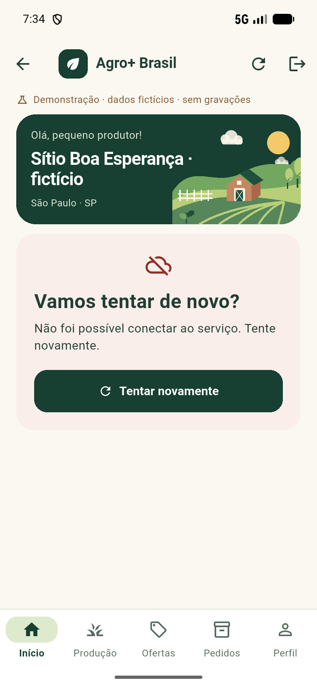
CarregamentoEstrutura estável durante a espera.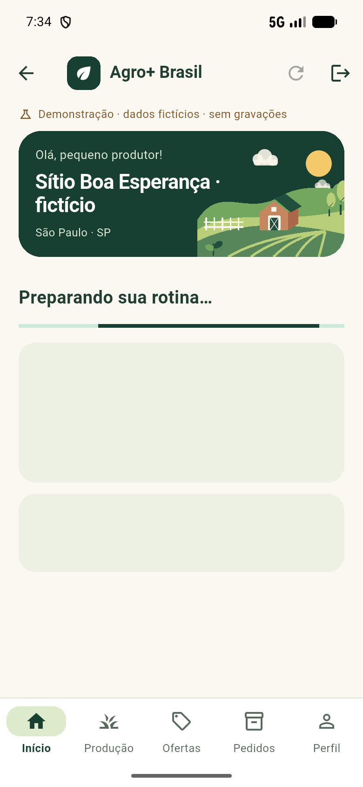
320 dpLargura menor com a escala padrão.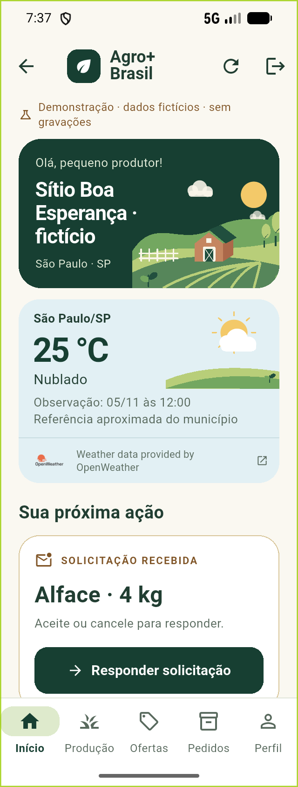
320 dp · fonte 200%Navegação em duas linhas sem encolher texto.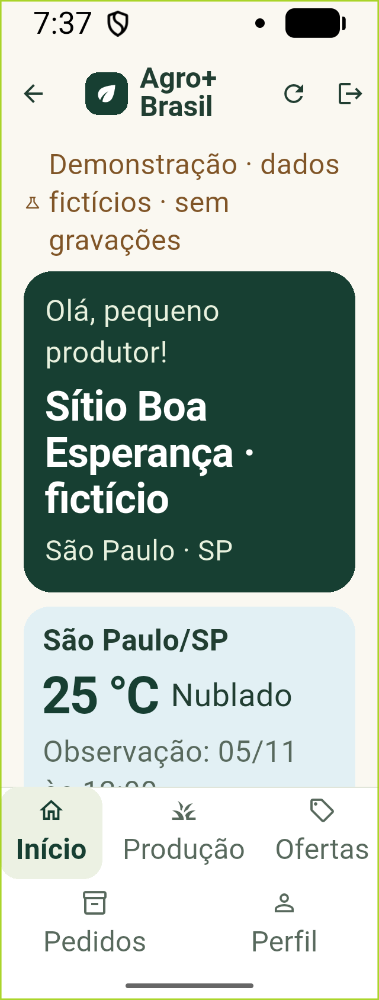
Clima ampliadoInformação e crédito acessíveis por rolagem.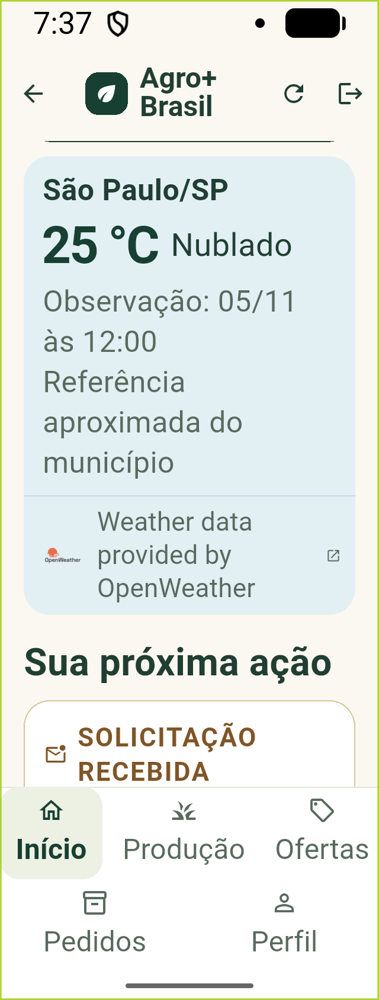
Produção ampliadaConteúdo continua navegável.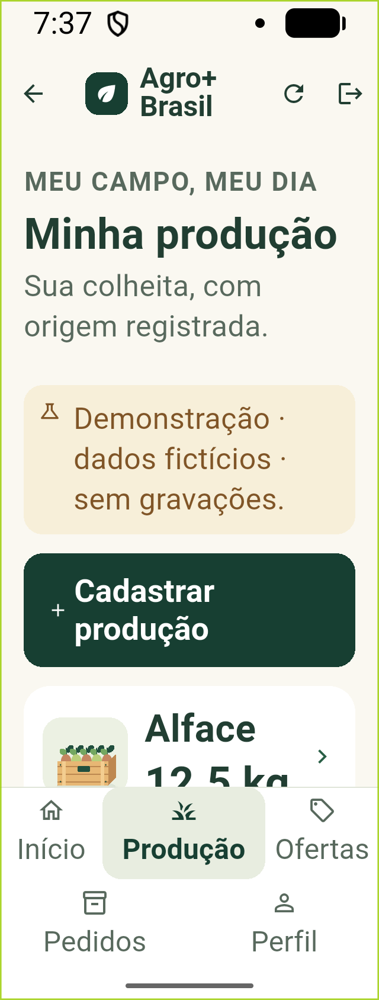
Web · autenticação e API reais
Banco de demonstração isolado, navegador Edge real, sem chamadas externas. Clima sem chave corretamente indisponível.
Referências analisadas, sem uso como assets
Todos os cinco PNGs foram abertos e examinados visualmente. Correspondência e decisões em AUDITORIA_V2.md. Os arquivos de terceiros permanecem locais e ignorados pelo Git; nenhuma imagem foi recortada ou inserida no aplicativo.